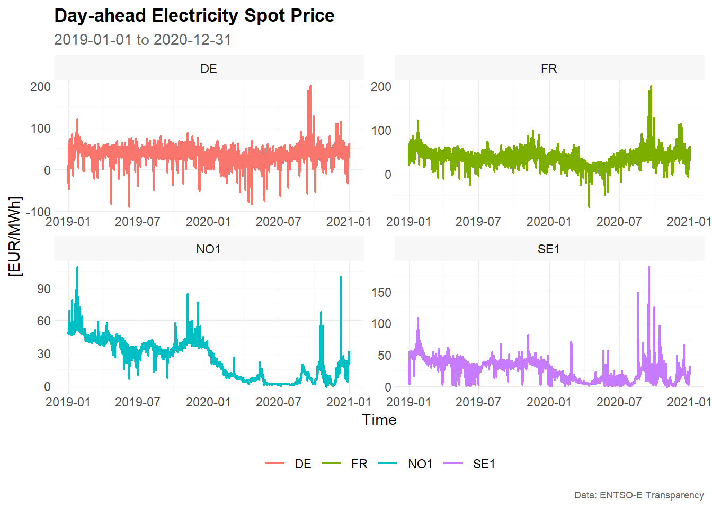
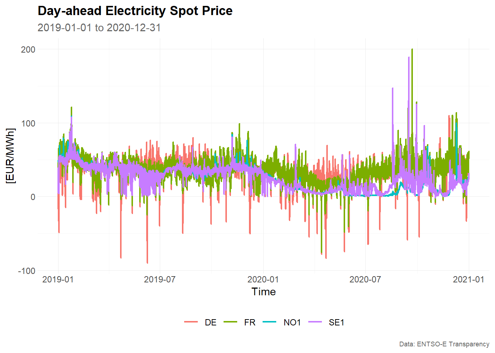
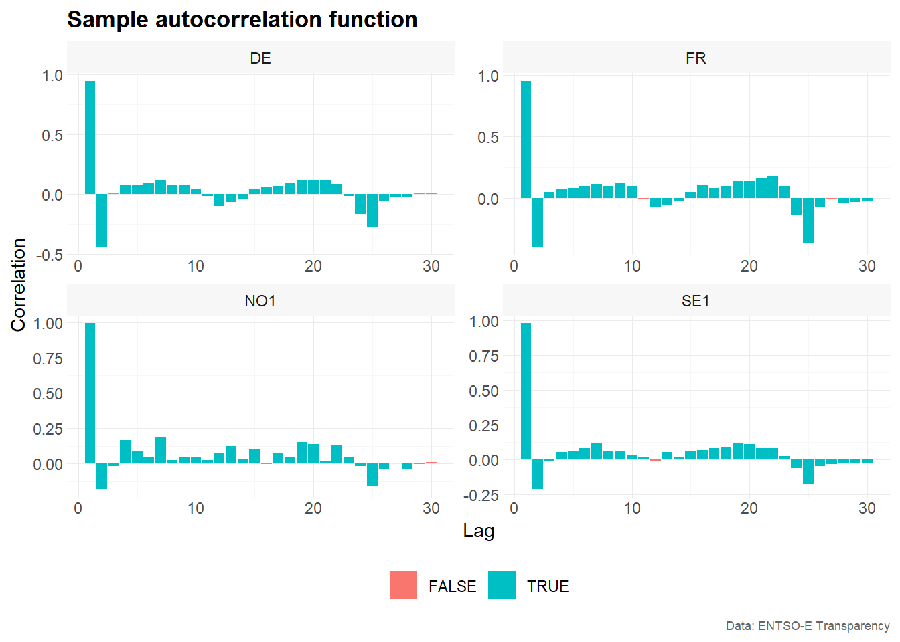
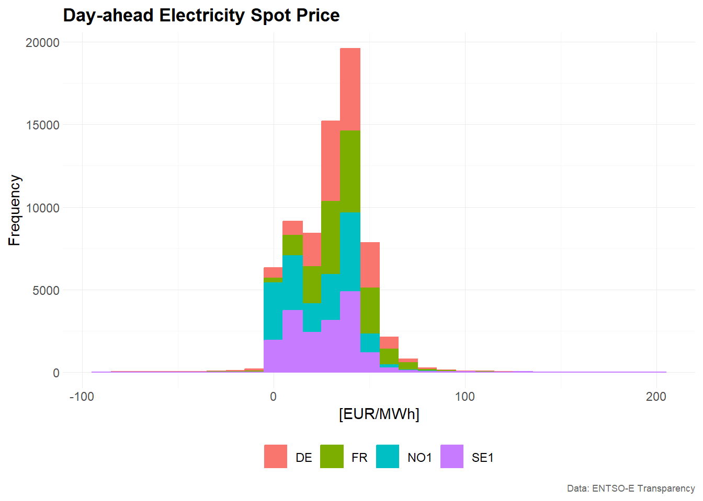
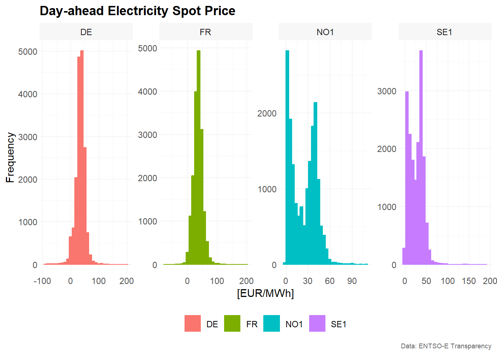
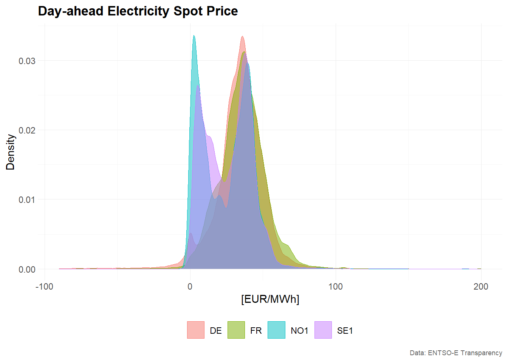
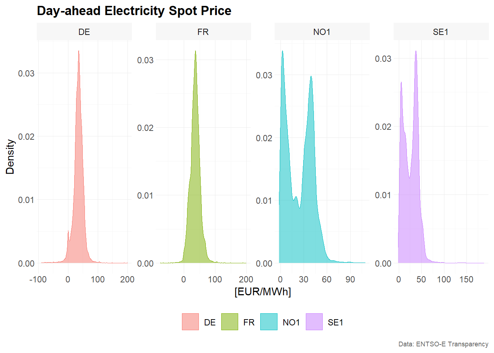
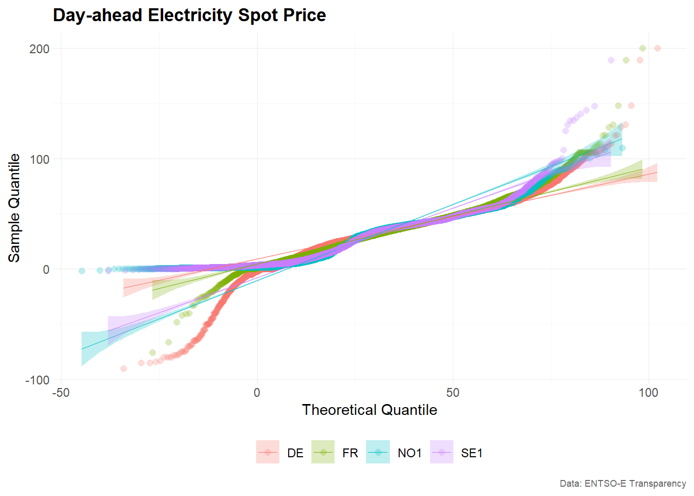
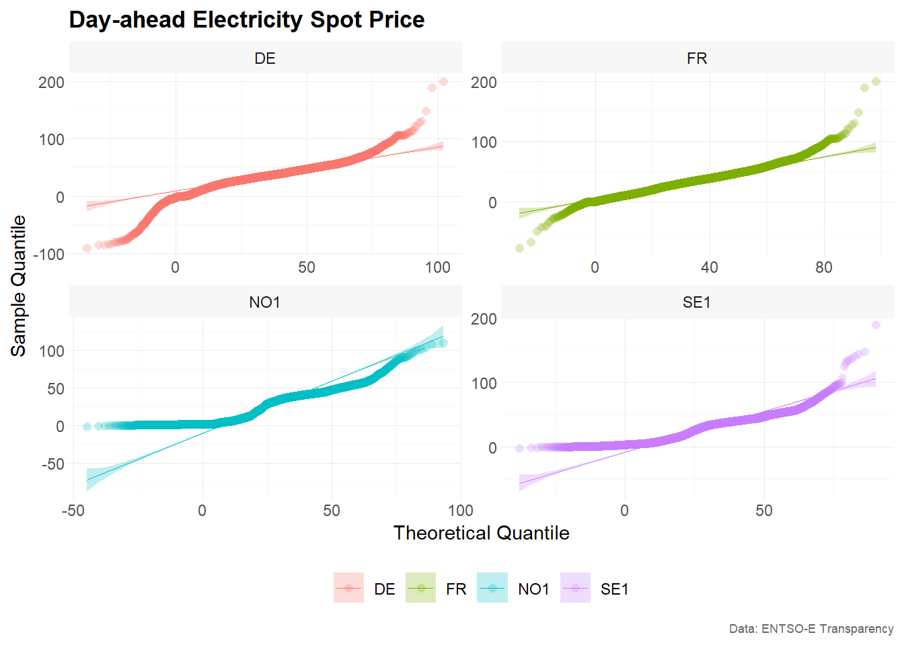

Visualization of time series data
Alexander Häußer
April 2026
Source:vignettes/vignette_03_data_visualization.Rmd
vignette_03_data_visualization.RmdThe package tscv provides a set of helper functions for
time series analysis, forecasting and time series cross-validation. In
addition to functions for splitting data and evaluating forecasts, the
package contains several visualization functions that are useful for
exploratory time series analysis.
This vignette demonstrates selected plotting functions from
tscv using hourly day-ahead electricity spot prices.
Installation
You can install the development version from GitHub with:
# install.packages("devtools")
devtools::install_github("ahaeusser/tscv")Data preparation
The data set elec_price is a tibble with
day-ahead electricity spot prices in [EUR/MWh] from the ENTSO-E
Transparency Platform. The data set contains hourly time series data
from 2019-01-01 to 2020-12-31 for eight European bidding zones.
In this vignette, we use four bidding zones:
-
DE: Germany, including Luxembourg -
FR: France -
NO1: Norway 1, Oslo -
SE1: Sweden 1, Lulea
The visualization functions in tscv work with data in
long format. Therefore, we define a context object that
identifies the relevant columns:
-
series_id: column identifying the individual time series -
value_id: column containing the numeric measurement variable -
index_id: column containing the time index
series_id = "bidding_zone"
value_id = "value"
index_id = "time"
context <- list(
series_id = series_id,
value_id = value_id,
index_id = index_id
)
# Prepare data set
main_frame <- elec_price %>%
filter(bidding_zone %in% c("DE", "FR", "NO1", "SE1"))
main_frame
#> # A tibble: 70,176 × 5
#> time item unit bidding_zone value
#> <dttm> <chr> <chr> <chr> <dbl>
#> 1 2019-01-01 00:00:00 Day-ahead Price [EUR/MWh] DE 10.1
#> 2 2019-01-01 01:00:00 Day-ahead Price [EUR/MWh] DE -4.08
#> 3 2019-01-01 02:00:00 Day-ahead Price [EUR/MWh] DE -9.91
#> 4 2019-01-01 03:00:00 Day-ahead Price [EUR/MWh] DE -7.41
#> 5 2019-01-01 04:00:00 Day-ahead Price [EUR/MWh] DE -12.6
#> 6 2019-01-01 05:00:00 Day-ahead Price [EUR/MWh] DE -17.2
#> 7 2019-01-01 06:00:00 Day-ahead Price [EUR/MWh] DE -15.1
#> 8 2019-01-01 07:00:00 Day-ahead Price [EUR/MWh] DE -4.93
#> 9 2019-01-01 08:00:00 Day-ahead Price [EUR/MWh] DE -6.33
#> 10 2019-01-01 09:00:00 Day-ahead Price [EUR/MWh] DE -4.93
#> # ℹ 70,166 more rowsLine charts
Line charts are the most common visualization for time series data. They show how the observed values change over time and are useful for detecting trends, seasonal patterns, level shifts, outliers and periods of high volatility.
The function plot_line() creates line charts from data
in long format. The first example creates a faceted plot, with one panel
for each bidding zone.
# Example 1 -------------------------------------------------------------------
main_frame %>%
plot_line(
x = time,
y = value,
color = bidding_zone,
facet_var = bidding_zone,
title = "Day-ahead Electricity Spot Price",
subtitle = "2019-01-01 to 2020-12-31",
xlab = "Time",
ylab = "[EUR/MWh]",
caption = "Data: ENTSO-E Transparency"
)
# Example 2 -------------------------------------------------------------------
main_frame %>%
plot_line(
x = time,
y = value,
color = bidding_zone,
title = "Day-ahead Electricity Spot Price",
subtitle = "2019-01-01 to 2020-12-31",
xlab = "Time",
ylab = "[EUR/MWh]",
caption = "Data: ENTSO-E Transparency"
)
The faceted version is useful when the individual time series have different levels or volatility. The combined version is useful for comparing the bidding zones directly in a single panel.
Bar charts
Bar charts can be used to display summary values by category or lag.
In this example, we use plot_bar() to visualize the sample
partial autocorrelation function.
The partial autocorrelation function measures the relationship between a time series and its lagged values after controlling for the intermediate lags. It is often used as an exploratory tool to identify relevant lag structures in time series models.
First, we estimate the sample partial autocorrelation function using
estimate_pacf(). The argument lag_max = 30
computes the partial autocorrelation for lags 1 to 30.
# Estimate sample partial autocorrelation function
corr_pacf <- estimate_pacf(
.data = main_frame,
context = context,
lag_max = 30
)
corr_pacf
#> # A tibble: 120 × 6
#> bidding_zone type lag value bound sign
#> <chr> <chr> <int> <dbl> <dbl> <lgl>
#> 1 DE PACF 1 0.948 0.0124 TRUE
#> 2 DE PACF 2 -0.437 0.0124 TRUE
#> 3 DE PACF 3 0.00539 0.0124 FALSE
#> 4 DE PACF 4 0.0735 0.0124 TRUE
#> 5 DE PACF 5 0.0735 0.0124 TRUE
#> 6 DE PACF 6 0.0898 0.0124 TRUE
#> 7 DE PACF 7 0.119 0.0124 TRUE
#> 8 DE PACF 8 0.0786 0.0124 TRUE
#> 9 DE PACF 9 0.0820 0.0124 TRUE
#> 10 DE PACF 10 0.0469 0.0124 TRUE
#> # ℹ 110 more rows
# Visualize PACF as correlogram
corr_pacf %>%
plot_bar(
x = lag,
y = value,
color = sign,
facet_var = bidding_zone,
position = "dodge",
title = "Sample autocorrelation function",
xlab = "Lag",
ylab = "Correlation",
caption = "Data: ENTSO-E Transparency"
)
#> Warning in geom_bar(stat = "identity", position = position, aes(x = {:
#> Ignoring unknown parameters: `size`
The resulting correlogram shows the estimated partial autocorrelation
by lag and bidding zone. The variable sign indicates
whether the absolute value of the estimated partial autocorrelation
exceeds the approximate confidence bound used by
estimate_pacf().
Distributions
Distribution plots are useful for understanding the marginal distribution of the observed values. For electricity prices, this is particularly relevant because prices may show skewness, heavy tails, negative values or extreme spikes.
The following examples use histograms, density plots and QQ-plots to explore the distribution of hourly electricity prices across bidding zones.
Histograms
Histograms show the frequency distribution of the observed values. They are useful for identifying the range, central tendency, skewness and outliers of a time series.
The first example overlays the distributions of the four bidding zones in one plot.
# Example 1 -------------------------------------------------------------------
main_frame %>%
plot_histogram(
x = value,
color = bidding_zone,
title = "Day-ahead Electricity Spot Price",
xlab = "[EUR/MWh]",
ylab = "Frequency",
caption = "Data: ENTSO-E Transparency"
)
#> Warning in geom_histogram(aes(x = {: Ignoring unknown parameters: `size`
#> `stat_bin()` using `bins = 30`. Pick better value `binwidth`.
# Example 2 -------------------------------------------------------------------
main_frame %>%
plot_histogram(
x = value,
color = bidding_zone,
facet_var = bidding_zone,
facet_nrow = 1,
title = "Day-ahead Electricity Spot Price",
xlab = "[EUR/MWh]",
ylab = "Frequency",
caption = "Data: ENTSO-E Transparency"
)
#> Warning in geom_histogram(aes(x = {: Ignoring unknown parameters: `size`
#> `stat_bin()` using `bins = 30`. Pick better value `binwidth`.
The faceted histogram separates the bidding zones into individual panels. This makes it easier to inspect the distribution of each time series separately, especially when the distributions overlap in the combined plot.
Density
Density plots provide a smoothed version of the empirical distribution. Compared with histograms, they are often easier to use when comparing several distributions in one figure.
# Example 1 -------------------------------------------------------------------
main_frame %>%
plot_density(
x = value,
color = bidding_zone,
title = "Day-ahead Electricity Spot Price",
xlab = "[EUR/MWh]",
ylab = "Density",
caption = "Data: ENTSO-E Transparency"
)
#> Warning: Using `size` aesthetic for lines was deprecated in ggplot2 3.4.0.
#> ℹ Please use `linewidth` instead.
#> ℹ The deprecated feature was likely used in the tscv package.
#> Please report the issue at <https://github.com/ahaeusser/tscv/issues>.
#> This warning is displayed once per session.
#> Call `lifecycle::last_lifecycle_warnings()` to see where this warning was
#> generated.
# Example 2 -------------------------------------------------------------------
main_frame %>%
plot_density(
x = value,
color = bidding_zone,
facet_var = bidding_zone,
facet_nrow = 1,
title = "Day-ahead Electricity Spot Price",
xlab = "[EUR/MWh]",
ylab = "Density",
caption = "Data: ENTSO-E Transparency"
)
The combined density plot highlights differences between bidding zones in the location and spread of prices. The faceted version provides a clearer view of each individual distribution.
QQ-Plot
QQ-plots compare the empirical distribution of the observed values with a theoretical distribution, usually the normal distribution. They are useful for checking whether the data are approximately normally distributed.
For electricity prices, deviations from normality are common because prices can be skewed and may contain extreme values.
# Example 1 -------------------------------------------------------------------
main_frame %>%
plot_qq(
x = value,
color = bidding_zone,
title = "Day-ahead Electricity Spot Price",
xlab = "Theoretical Quantile",
ylab = "Sample Quantile",
caption = "Data: ENTSO-E Transparency"
)
# Example 2 -------------------------------------------------------------------
main_frame %>%
plot_qq(
x = value,
color = bidding_zone,
facet_var = bidding_zone,
title = "Day-ahead Electricity Spot Price",
xlab = "Theoretical Quantile",
ylab = "Sample Quantile",
caption = "Data: ENTSO-E Transparency"
)
If the observations were approximately normally distributed, the points in the QQ-plot would lie close to a straight line. Strong deviations from this pattern indicate skewness, heavy tails or outliers.
Summary
This vignette demonstrated several visualization functions from
tscv:
-
plot_line()for time series line charts -
plot_bar()for bar charts, here used to visualize partial autocorrelations -
plot_histogram()for histograms -
plot_density()for density plots -
plot_qq()for QQ-plots
Together, these plots provide a useful starting point for exploratory time series analysis. Line charts help inspect the temporal structure of the data, while distribution plots and correlograms help identify features that may be relevant for modelling and forecasting.